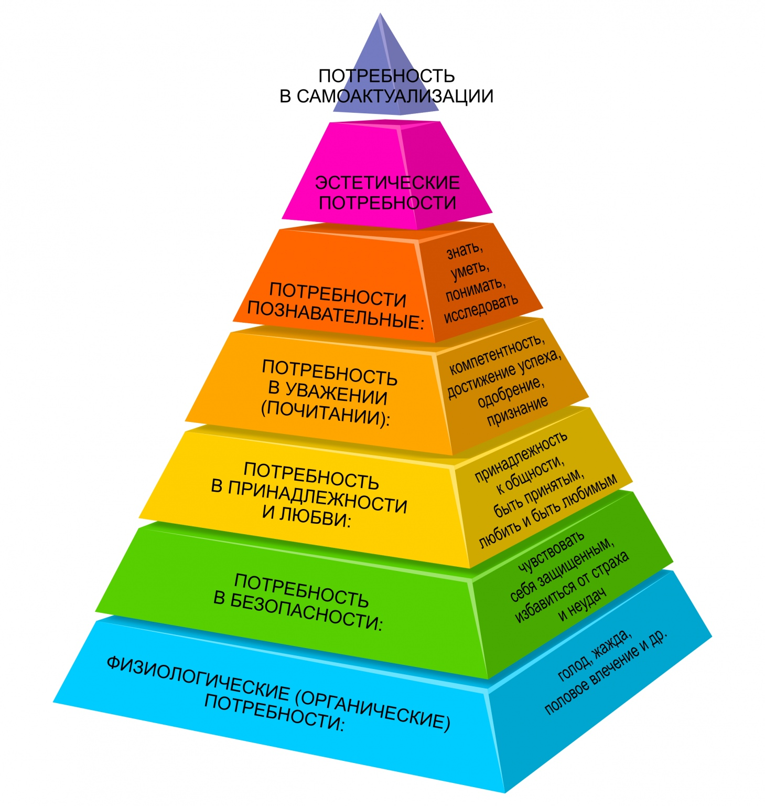
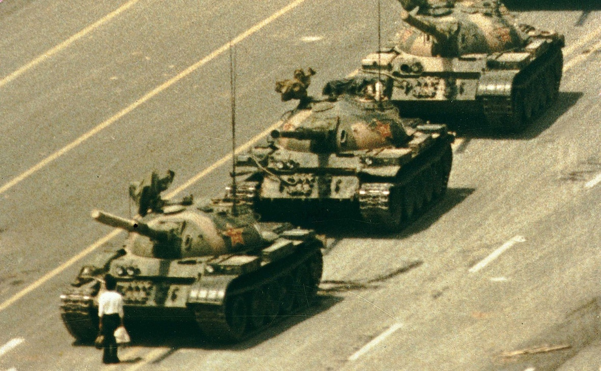
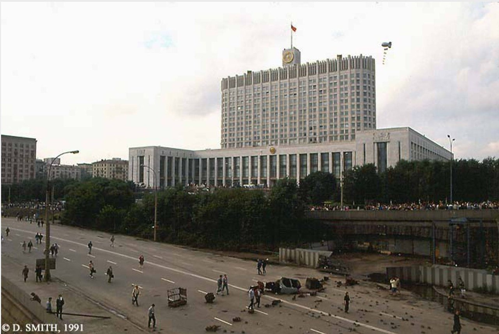
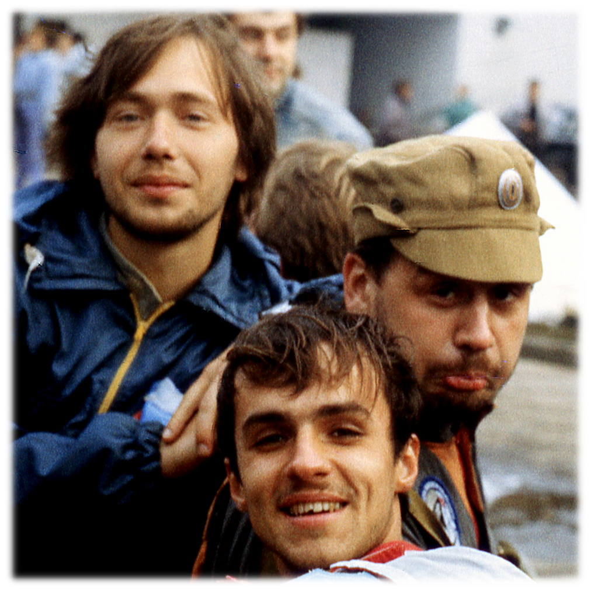
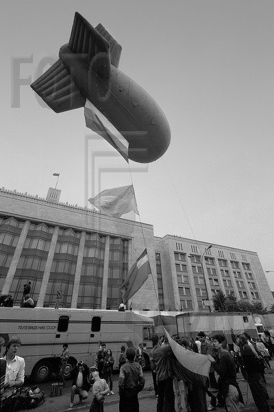
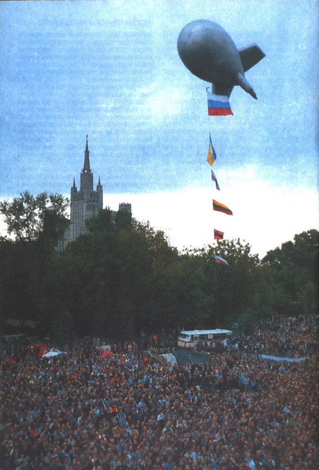
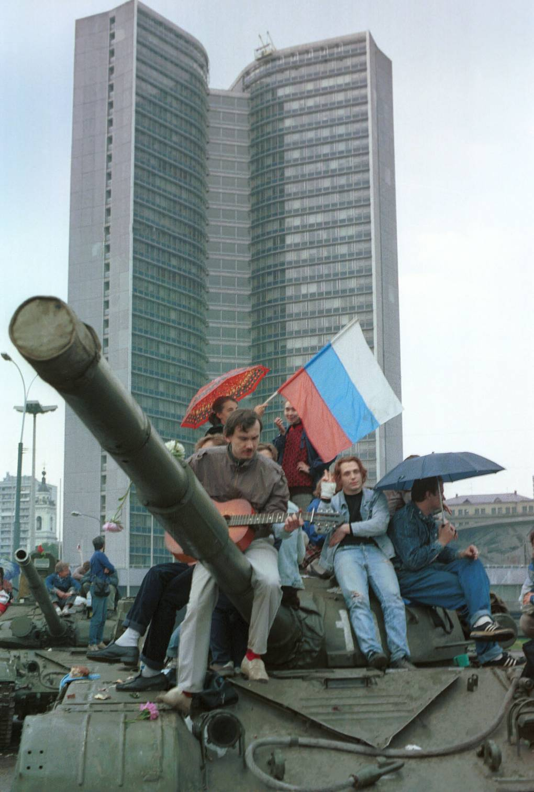
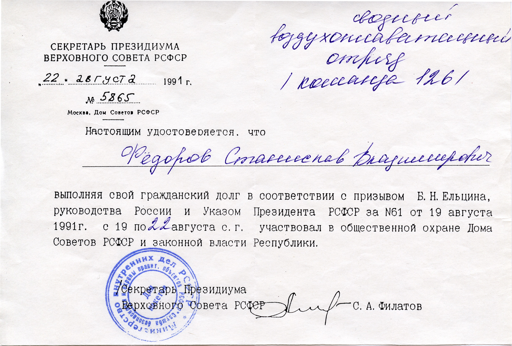

В 1991 году мне 24 года, я инженер-конструктор в космическом КБ и один из координаторов химкинской районной ячейки движения "Демократическая Россия". Я в отпуске и я в походе. Давно мечтал проехать на велосипеде из Питера в Москву, и в то лето, наконец, собрался.
Утро 19-го августа застало меня на середине маршрута. Была очень красивая стоянка на разливе речки Березайки, с отличными купальными пляжиками. Я проснулся в своей одноместной брезентовой палаточке типа "гробик" и привычно включил радио. Верная транзисторная "Селга" каталась со мной везде, ещё со школы, и все следующие дни тоже прошла со мной.
По радио передавали нечто невообразимое. Горбачёв типа болен, причём настолько, что указ о вступлении вице-президента Янаева в должность президента подписал сам Янаев. Тут же сообщалось о создании Государственного комитета по чрезвычайному положению и назывался его состав. Среди членов ГКЧП - глава КГБ СССР Крючков. Картина ясная - в стране переворот. Мы этого ждали.
Перед отпуском у меня был разговор с секретарём нашей химкинской ДемРоссии. У неё хранились списки нашего актива с домашними телефонами для обзвона, и я её тогда попросил держать этот список в единственном экземпляре, хранить всегда при себе, и быстро уничтожить, если что. Позже я узнал, что пока я на берегу Березайки приходил в себя от новостей, молодая женщина в своей квартире в Химках жгла в ванной этот список, из квартиры валил дым, а её муж дежурил на балконе, высматривая, не едут ли уже за ними. Мы все ожидали ареста в тот день.
И первая мысль моя в то утро: а меня здесь не найдут! У меня есть палатка, велосипед, котелок и деньги, я могу от них долго прятаться!
Всё, что мы, выросшие в СССР, знали о родном государстве, говорило нам, что мы все на учёте у "конторы". Популярен был стишок:
Товарищ, верь, пройдёт она,
И демократия, и гласность.
И вот тогда госбезопасность
Припомнит наши имена.
Утром сбывшихся пророчеств у меня был выбор: срочно возвращаться в Москву навстречу стопроцентному (так казалось) аресту, или прятаться и смотреть, что будет. Вариант, что через три дня всё закончится оглушительной нашей победой, и документы будут жечь уже в химкинском горкоме КПСС, мне в голову не приходил, соотношение сил в стране было не в пользу "демократов", я знал это по разговорам в нашем КБ. Да и в тех сожжённых списках нас было несколько десятков на весь район. Ничто не предвещало победы. Но прятаться было невыносимо: я же в лесу ничего не увижу и не узнаю, по радио будет только пропаганда ГКЧП, а что будет с Ельциным, например? Судьба только что избранного при нашем яростном участии Президента России была мне небезразлична, не скрою. Но сильнее всего было любопытство, и страх остаться без новостей перевесил страх ареста. К середине дня 19 августа я доехал на велике до Бологого и взял билет на электричку до Твери. Первый выбор я сделал: не прятаться. И оказался прав: впереди меня ожидало главное (пока) приключение в жизни.
Часть 2. В Москве идёт дождь
"В Сантьяго идёт дождь" - это такое кино про военный переворот в Чили в 1973 году. Как военные захватывают власть в стране, тысячами хватают сторонников президента Альенде и держат их на стадионе, потому что столько народу не поместится в тюрьмы. А сам Альенде собирает в президентском дворце тех, кто готов сопротивляться, да там и погибает с автоматом в руках. Эту историю вспоминал я вечером 19 августа 1991 года в электричках Бологое-Тверь и Тверь-Москва. Ещё, конечно, вспоминалась более свежая польская история, как генерал-коммунист Ярузельский в 1981 году ввёл в стране военное положение и успешно пересажал всё, что двигалось. И уж совсем близки были по времени события на площади Тяньаньмэнь в Пекине. Всего два года назад китайские студенты, начитавшись новостей из СССР, вышли требовать своей "перестройки". И их раздавили танками прямо на центральной площади столицы.
За окном электрички темнело, как раз накрапывал дождик, а "Селга", как раз, рассказывала про танки. Что весь центр Москвы забит военной техникой, потому что ГКЧП ввёл в городе чрезвычайное положение. Что закрыты все нормальные газеты. Всё это было очень похоже и на Чили-1973, и на Польшу-1981. Но были и отличия. И я удивлялся, прижимая приёмник к стеклу вагонного окна (приём был неважный, особенно до Твери).
Ельцин не арестован! Он находится в Доме Советов РСФСР на Краснопресненской набережной, с ним вице-президент Руцкой, председатель Верховного Совета РСФСР Хазбулатов, глава российского правительства Силаев и Мэр Москвы Попов. Руководители России подписали обращение к народу, где назвали переворот переворотом, а членов ГКЧП - преступниками. И обо всём об этом я слышу в новостях государственного радио "Маяк"!
Из новостей было ясно, что сопротивление началось. И в первых рядах сопротивления оказались журналисты. Это я ещё телевизор в тот день не видел. Там показали в прямом эфире пресс-конференцию членов ГКЧП, на которой юная Таня Малкина из закрытой "Независимой газеты" спросила их на всю страну: "Понимаете ли вы, что сегодня ночью вы совершили государственный переворот?" А у Янаева тряслись руки, и оператор первого канала показывал эти трясущиеся руки крупным планом. А вечером в программе "Время" был репортаж Сергея Медведева с улиц Москвы, где показали Ельцина на танке, зачитывающего то самое обращение. В этот день журналисты закрытого "Московского комсомольца" заложили кирпичом парадный вход в свою редакцию, а внутри на редакционных ксероксах размножали указы Ельцина, которые потом на улицах народ раздавал солдатам. Но я ничего этого не видел, я в это время в электричке радио слушал. Но поскольку ехал я в правильном направлении, то к главным событиям успел.
Часть 3. Где моё место?
Домой на Войковскую я добрался только поздно вечером 19 августа 1991 года, не встретив по пути от Петровско-Разумовской на улицах ни одного танка. Милицейской машины у нашего подъезда тоже не было, что радовало, но дверь в квартиру я открывал своим ключом и очень тихо:
- Кто-нибудь приходил за мной?
- Нет.
Происходящее всё меньше было похоже на Чили. Но страх меня тогда ещё не отпустил, поэтому свет в комнате я зажигать не стал, и попросил бабушку и деда не снимать трубку телефона: а вдруг прослушивают? Телефон, кстати, звонил у нас в тот вечер довольно часто. Наверное, коллеги из ДемРоссии тоже хотели понять, что нам всем делать. Радио "Эхо Москвы" работало тогда на средних волнах, и в Москве его ловила моя "Селга". Новости предлагали мне два варианта действий:
- Ельцин призвал к всеобщей политической забастовке. Надо ехать в Химки и пытаться остановить наше НПО;
- Вокруг здания Верховного Совета РСФСР народ строит баррикады. Надо ехать на Краснопресненскую.
Оба варианта обещали только риски. Шансов на успех нигде не рисовалось, на Краснопресненской явно ожидался Тяньаньмэнь, но в Химки мне хотелось меньше. Я два года после Бауманки успел проработать на НПО им. Лавочкина и кое-что успел понять. Поговорить о политике готовы были все, потому что до сего дня это не несло никаких рисков и не требовало никаких усилий. Скинуться на помощь бастующим шахтёрам Кузбасса (а мы проводили на Лавке такую акцию) соглашалось уже меньшинство, потому что это хоть и не было наказуемо, но денег-то жалко. А политическая стачка теперь, после Горбачёва, грозила, как минимум, потерей работы. И согласятся на такой риск единицы, и скрутят их немедленно даже не менты, а свои же коллеги, которым "надо кормить семью". И мне тогда, в мои 24 года, уже было понятно, что эти коллеги по своему правы, и не надо бороться за свободу тех, кому эта свобода ни разу не нужна. Тебе она нужна? Вот и иди к тем, кому она тоже нужна. А они все идут сейчас к Белому дому на Краснопресненской набережной. Не за Ельцина они туда идут, и уж тем более не за Горбачёва. Идут потому, что терпеть над собой власть лживых тварей из прошлого - унизительно. Но выйти против них, нагнавших в Москву танки - страшно. И в головах у многих людей вот прямо сейчас качаются весы: что перевесит, унижение или страх? (Сейчас бы я спросил так: твой уровень по Маслоу выше или ниже третьего? Но в августе 1991 про пирамиду потребностей по Маслоу я ещё ничего не слышал. Но уже понимал, что выйдет нас меньшинство, и поэтому нам необходимо собраться вместе).
Я решил, что если к утру Белый дом не будет взят штурмом, то мне туда. Вкусно поужинал и лёг спать, что снова оказалось верным решением. Я как чувствовал, что впереди ждали двое суток без сна.

Часть 4. Что взять с собой на баррикады?
Утро 20 августа 1991 года. По радио ещё есть новости, штурма Белого дома ночью не было. Я собираюсь туда, делаю бутерброды. Что ещё надо взять с собой, отправляясь в полную неизвестность? В то утро я задумался только один раз, когда достал из шкафа огромный охотничий тесак в ножнах и свой любимый фотоаппарат "Зенит ЕМ" (плёночный, разумеется, зато с хорошей оптикой. Куплен был на первые две стипендии). Посмотрев на эти два предмета я вдруг почувствовал, что брать надо лишь один из них. Умещались оба, но почему-то нужно было выбрать. И я положил нож обратно в шкаф.
Вот удивительные это были дни! Быстро и интуитивно приходили решения, верные навсегда. И сразу навсегда запоминались. Народ тогда тащил на баррикады всё, чем можно было вооружиться, штурма все ожидали всерьёз, пустые бутылки тоже вдруг стали оружием (стеклянные, разумеется, пластиковых в СССР не было), автолюбители приносили канистры с бензином и наполняли те бутылки. И везде, на каждой баррикаде, сразу возникали две партии: вооружённых и безоружных. И об этом постоянно спорили. Логика вооружённых была ветхозаветной, в духе "око за око, зуб за зуб":
- На нас вышли с оружием. Танки все видели? Мы танки в Москву не звали, зачем их ввели? Им прикажут - они будут в нас стрелять. Они в нас стреляют с 1917 года, и сейчас ни перед чем не остановятся! А лично я свою жизнь намерен дорого продать!
Логика безоружных сводилась к Нагорной проповеди:
- Солдаты тоже люди. Мы им лично ничего плохого не сделали. Увидят солдатики ваши стволы - начнут отстреливаться с перепугу, подумают, что перед ними и вправду враги. Против танка не поможет не только нож, но даже и автомат, а вот перед безоружным человеком танк остановится (Это правда. Именно так остановили 19 августа на Краснопресненской набережной тот танк, с которого потом выступал Ельцин. Но остановив, сразу напихали в ходовую часть всяких железок. В ситуации реального столкновения обе партии действовали удивительно согласовано).
С того утра я в партии безоружных. Я тогда просто подумал, что тесак в руке не позволяет быстро расчехлить "Зенит" и нажать на спуск, и я рискую пропустить тот единственный кадр, который может войти в историю. Тем утром история была удивительно близко, и чтобы в её войти, надо было просто шагнуть за порог.
Фото кладу с площади Тяньаньмэнь. Оно вошло в историю:

Часть 5. Две реальности
Утро 20 августа 1991, Войковская. Я вышел из дома весь такой накрученный новостями и принятыми решениями, весь такой готовый останавливать танки голыми руками. И испытал шок: по пути к метро мне не встретилось ни танков, ни людей, желающих их останавливать. Обычная жизнь шла вокруг, обычный будний летний день, обычные прохожие. Где переворот, где ГКЧП, где всё то, о чём говорят по радио? Тут ходит трамвай, открыты магазины, и люди торопятся туда, а явно не на баррикады. Ощущение другой реальности не покидало меня и в метро. В этой реальности не было путча. Сегодня я понимаю, что те события называть революцией нельзя. Нельзя не по их последствиям (последствия тянут на революцию), а именно по уровню вовлечённости населения. Даже в Москве абсолютное большинство жителей в событиях не участвовали и прожили те дни как и любые раньше. И на тридцатилетие ГКЧП им вспомнить нечего. Остаётся их от души пожалеть.
Граница двух реальностей утром 20 августа проходила у выхода из метро "Баррикадная". Над домами в той стороне, куда мне было надо, висел аэростат с огромным бело-сине-красным флагом. Его было видно прямо от стеклянных дверей метро. И обычная московская толпа делилась на две части. И та часть, которая шла в сторону триколора, переставала быть обычной. Мы встречались глазами и в этот момент понимали, что существует это "МЫ". И это был момент острой радости, которую я испытал впервые за последние сутки. Заканчивалась паника, с каждым шагом улетучивался страх. Радость случается с вами только тогда, когда вы угадали правильный путь. Радость - это подсказка.
Часть 6. Сбывшееся пророчество
В 1991 году ещё мало кто знал, где именно в Москве находится Дом Советов РСФСР. Все знали Кремль, все знали Лубянку. А вот органы власти Российской Федерации в Советском Союзе были чем-то вроде ДОСААФ - они, вроде, есть, но никому и низачем не нужны. Дорогу от метро к Белому дому приходилось бы показывать, если бы не аэростат. Но я дорогу уже знал и без подсказок.
В январе того года случились кровавые события в Вильнюсе: советская армия штурмом взяла телецентр, были погибшие. Здание Верховного Совета Литовской ССР (уже ставшего Сеймом Литовской республики) было на очереди, но вокруг него встали многотысячным кольцом безоружные литовцы, и армия ограничилась телецентром. В Москве тогда состоялся митинг солидарности с народами Прибалтики, возможно, крупнейший митинг в истории России. Никто нас достоверно не сосчитал, но Манежная площадь была полна. А в Химках мы собирали подписи под письмом протеста против насилия, и собрали несколько сотен. Подписи я вызвался отвезти сопредседателю «Демократической России» народному депутату Льву Пономарёву (признанному ныне иностранным агентом, зато не слившемуся и не сменившему сторону за 30 лет). И бумаги у меня приняли январским вечером 1991-го в том самом здании на Краснопресненской набережной. Я тогда обошёл эту громаду по периметру, считая шаги. Я пытался прикинуть, сколько понадобится народу, когда нам придётся закрывать живым кольцом наш российский Парламент. Результат сразу записал в блокнотик и поэтому не запомнил. Но когда через семь месяцев снова там оказался, чувствовал себя очень странно: словно кино смотрел, снятое кем-то по моему сценарию. Похоже, что будущее - это такая же объективная реальность, как и прошлое. И из будущего иногда доходят сигналы. Доходят, но не всегда. А жалко!
Часть 7. Место силы
20 августа 1991 года, первая половина дня, Белый дом. Что мы имеем? Имеем дофига народа, в разы больше, чем я прикидывал в январе. Народ, который валит от Баррикадной, весь что-то тащит. Это что-то на глазах превращается в баррикады. Они ещё смешные, меньше человеческого роста, но их много, и у них много защитников. Народ, кто стоит, стоит уже на баррикадах. Ближе к зданию вижу колонну зелёных ГАЗ-66 с солдатами. Солдаты сидят в машинах, никого не трогают, их тоже никто не обижает. Обхожу крайний грузовик и понимаю причину мирного сосуществования: на ветровом стекле кабины наклеена фотография Ельцина. Двигаюсь дальше к Москве-реке и понимаю, что фото есть на каждой машине, причём все фотки одинаковые. Триколоров у них не было, понимаю я, и они портрет Ельцина использовали как символ, чтобы их народ пропустил под самые стены нашей цитадели. Слушаю разговоры, спрашиваю сам. Рассказывают, что это десантники, командует ими какой-то генерал Лебедь, который ещё вчера перешёл на сторону Ельцина, и его бойцы всю ночь на 20-е охраняли Белый дом. Народ им за это благодарен:
- Нас тут совсем мало оставалось, особенно утром, когда метро открылось. Едва кольцо замкнули, а баррикады тогда вообще по колено были, смех один!
Бойцы в машинах выглядят усталыми, они ведь уже сутки на ногах. Наши люди их кормят, десантники не шугаются. В кузов одной из машин уходят и мои бутерброды.
Двигаюсь дальше, выхожу на набережную, фотографирую. Парадную лестницу Белого дома перегораживает вполне конкретная баррикада. На ней уже есть свои ветераны, и они уже делятся воспоминаниями:
- Вот на этом месте вчера Ельцин с танка выступал, я сам его лично видел!
Народу полно, народ прибывает, общее настроение - радостное. В этот момент я впервые поверил, что всё может закончиться хорошо. Хоть не было тогда ни одной приметы, кроме вот этой общей радости, да ещё внезапно выглянувшего солнышка. В Москве уже не идёт дождь!

Часть 8. Воздухоплаватели
20 августа 1991 года, день. Погулял я вокруг Белого дома, надышался силой, пофотографировал. Пора было вливаться в коллектив. Причём, я ещё от метро Баррикадная знал, в какой именно вольюсь коллектив. Юра, мой однокашник по Бауманке, давно звал меня на работу в свой кооператив "Экосфера". Занимались они рекламным воздухоплаванием, это было тогда всем в диковинку, и желающие заплатить за болтающуюся в воздухе рекламу находились. Как только я утром увидел над Белым домом аэростат, так сразу и понял, где именно я найду знакомых.
Аэростат был привязан на лужайке под балконом Белого дома со стороны парка имени Павлика Морозова. На баллонах вокруг фала сидели ребята и девушки, Юры среди них не было. Но фамилия его сработала как пароль. Ответил мне бородатый парень в лётном комбинезоне:
- А его нет сейчас, будет позже. Ты тоже из МВТУ? Оставайся с нами, нам надёжные люди нужны, мои уже с ног валятся. Я Стас Фёдоров, командир этого воздухоплавательного парка.
Фото из ЖЖ Станислава Фёдорова. Петя Цирг, сам Стас и Дима Момзяков. Вот такими я их и увидел тогда:

Часть 9. Воздушный маяк
Аэростат Е-80 существовал в августе 1991 года в единственном экземпляре. Это была собственная разработка инженерно-внедренческого кооператива "Экосфера". Аппарат имел объём 80 кубометров, мог нести два рекламных транспаранта на бортах и один на штанге, наполнялся гелием, оболочка была сшита из прорезиненой ткани типа "серебрянка", имела четыре надувных стабилизатора и стягивающую систему из резиновых шнуров - для компенсации неизбежной потери гелия через швы и дефекты ткани. Всё это парни мне объяснили первым делом и очень серьёзно.
- Вот смотри, когда стягивающая система больше не справляется, давление газа в нижней части оболочки сравнивается с атмосферным, и под воздействием ветра в носовой части образуется "ложка". Видишь ложку? Значит, настало время его подбивать. Не в смысле "сбивать", а в смысле - поддувать.
Вот тут я и понял, для чего не хватало надёжных людей воздухоплавательному отряду. Ребята и даже девушки надели перчатки и уцепились за фал. В одиночку опустить аэростат было нереально. Аппарат с триколором медленно пошёл вниз. Вблизи он был огромен, его мотало ветром, и нам пришлось, взявшись за руки, огородить в толпе довольно большой круг на изрядно уже вытоптанной лужайке. Аппарат получил в брюхо свежую порцию гелия, складка на пузе у него разгладилась, и его так же аккуратно, множеством рук, вернули на высоту. Командир продолжил рассказ:
- У нас вчера был подъем тут рядом, на Калининском проспекте (это Новый Арбат сегодня). Я как утром новости услышал, сразу понял, что теперь не до рекламы, потому что если победит этот ГКЧП, то всему бизнесу хана, а не только нашему. А тут мимо нас народ попёр с Манежной, когда там узнали, что Ельцин в Белый дом приехал. Ну и я приказал опустить "восьмидесятку", мы сняли рекламу и на руках привели аэростат сюда, прямо по проспекту, как слона. Нам принесли самый большой российский флаг из тех, что у народа были. Мы его привязали на фал и подняли сначала невысоко, как на рекламном подъёме. Да и выше государственного флага не рискнули сначала поднимать (а на флагштоке Белого дома всё это время полоскался государственный флаг РСФСР - красный с синей полоской вдоль древка). Через полчаса прибегает к нам чел изнутри, говорит, что от Руцкого. Это, говорит, у вас аэростат заграждения? Нам сообщили, что сюда готовится вертолётный десант! Поднимайте на максимальную высоту, чтобы вертолёты к крыше подойти боялись. Ну мы такому приказу только рады, фал нарастили и подняли аппарат выше флагштока. А триколора-то с такой высоты и не видно, маловат он оказался для такой высоты. Ну, наши менеджеры (Стас кивнул на девушек. Так я впервые в жизни увидел живого менеджера) ломанулись уже вечером на базу, и за ночь сшили вот это. Нравится? К нам с утра народ подходит и благодарит. Оказывается, нас от метро видно, а никто же не знает, куда идти и где в Москве Белый дом!

Часть 10. Звонок другу
За всеми этими воздушными приключениями мы совсем забыли про путч! А между тем, днём 20-го августа Ельцин позвал всех москвичей на митинг. Вот прямо сюда и позвал, на ту самую лужайку под балконом Белого дома, где я уже и стоял в тот момент в составе нашего воздухоплавательного отряда. Но митинг объявлен, и это - инфа, а инфа требует распространения. В нашем двадцатом веке это делалось так.
Где находится ближайший телефон-автомат, мне ребята сразу объяснили. У меня теперь есть командир, я отпросился позвонить - Стас отпустил (быть командиром боевого отряда ему явно нравилось больше, чем быть техническим директором кооператива). Ближайший телефон оказался не рядом, а через три баррикады, аж на набережной Москвы-реки на полпути к Центру международной торговли. К будке стояла очередь, все были с баррикад, и всех штырило от происходящего. Это было слышно:
- Мама, алло! Ты меня слышишь? У меня всё хорошо, просто отлично! Тут полно народу, баррикады, танки! Приезжайте сюда с папой, будет выступать Ельцин!
Я дождался очереди, набрал номер своего рабочего телефона. В Химках сняли трубку, телефон проглотил двушку. Я попросил к аппарату своего приятеля и однокашника Колю:
- Коля, привет тебе с баррикад! Да, отпуск развивается отлично! А вы там как? Уже бастуете?
- Андрюха, ты уже там? Тебя не арестовали? А у нас тут тихо всё и как-то грустно. Даже в курилке все замолчали (Вот! Правильно я не поехал в Химки! Там другая реальность, а мне нравится - эта!)
- Нам тут грустить некогда, мы готовимся обороняться. Передавай всем от меня большой привет, пусть сразу с работы едут сюда, объявлен большой митинг. Штурм, говоришь, тоже объявлен? Вот и посмотрим, что из объявленного скорее состоится.
Состоялся митинг.
Часть 11. Флаги на фале
Я точно помню, что утром 20-го августа флаг под аэростатом был один, огромный триколор. К концу процесса их было восемь. Это получилось само, в те дни всё получалось само, и никто не управлял процессом. Просто пришли тогда к Белому дому люди из национальных диаспор, принесли свои национальные флаги. Почему пришли? Потому что если бы победил ГКЧП, то январский Вильнюс повторился бы и в Вильнюсе, и в Киеве, и везде. Потому что назад в СССР республики загнать в 1991-м году можно было только большой кровью. И именно поэтому московские украинцы, армяне, грузины и все, кто этой крови не хотел, поддержали в те дни Ельцина.
Первыми к нам с большим жёлто-голубым флагом пришли украинцы. Стас Фёдоров был с ними строг:
- А Украина осудила ГКЧП?
- Да! Слушайте новости!
- Ладно, ждите. Будем подбивать аппарат, тогда и подцепим вашего жовто-блакитного.
Как только флагов на фале стало два, у нас внизу выстроилась очередь. В следующий раз мы вешали уже несколько полотнищ сразу, а москвичи на всё это смотрели и учили по непривычным флагам политическую географию близкого будущего.
У нас в отряде, кстати, тоже не все были москвичи. Я уже не помню, как звали того эстонского парня, но он был воздухоплавателем, знал Фёдорова, оказался в августе в Москве, пришёл к Белому дому один, увидел аэростат - и он в отряде. Стас тогда не удержался от красивого жеста:
- Поскольку в наших рядах есть теперь представитель дружественной Эстонии, я предлагаю отныне именовать наше подразделение сводным воздухоплавательным отрядом!
Смех смехом, но через два дня именно это название вошло в официальные документы. И я вам этот документ покажу. А пока вот фото с балкона Белого дома, сделанное вечером 20-го августа:

Часть 12. Комендантский час
Вечером 20-го августа 1991 года в Москве был объявлен комендантский час. В программе "Время" показали генерала, он был в тёмных очках и говорил страшным голосом страшные слова. Косплеил он при этом то ли Пиночета, то ли Ярузельского. Как звали генерала я не помню, я его по телевизору не видел. Я в это время нарушал комендантский час. И вместе со мной его нарушали примерно двести тысяч человек. Точно никто не знает, но вечер 20-го - это был пик количества защитников Белого дома. Там всё вокруг было забито народом, от жилых домов по Краснопресненской набережной до здания СЭВ, и от парка Павлика Морозова до Москвы-реки. Причём, места тогда было больше, чем сейчас, потому что забора вокруг Белого дома не было, и стояли мы начиная прямо от стен. Лужков от Исполкома Моссовета прислал нам вагончики мобильных туалетов, они сразу захлебнулись. Кустам в парке было тяжело, но они держались. Ожидался штурм, приказ о нём уже был отдан Крючковым, и в штабе обороны Белого дома об этом узнали одновременно со спецподразделением КГБ СССР "Альфа", которому приказ был адресован. Потому что в тот вечер все перезванивались со всеми, у всех были однокашники или бывшие сослуживцы на противоположной стороне.
Приехал Юра, мой институтский друг, коммерческий директор "Экосферы". Он был дико загружен, как все предприниматели в тот день:
- Наш бизнес закончился. Клиенты весь день отказываются от подписанных уже контрактов. Если мы тут сейчас потеряем "восьмидесятку", то зарабатывать будет вообще нечем. Поэтому если нас всех сегодня убьют, это может оказаться не самым плохим финалом.
Убьют нас сегодня или не убьют, но пока опять начался дождь. И ночевать нам предстояло на газоне. Надо было обустроить этот газон, это отвлекало от ожидания штурма. Я отпросился у командира и поехал домой за палаткой. У меня среди снаряги был не только одноместный "гробик", но и здоровенная четырёхместная высокая брезентуха. Не возвращаться? Такого и в мыслях не было. Наоборот, когда я проходил баррикады по пути к метро, мне было стыдно и хотелось крикнуть всем, кто оставался: «Я только за палаткой, через час вернусь, честное слово!»
Часть 13. Стальное кольцо
Вечер 20-го августа 1991 года. В метро и на Войковской опять другая реальность, в которой нет путча (комендантского часа, кстати, тоже никакого нет). Только это уже не удивляет, просто хочется поскорее вернуться к своим. В те счастливые августовские дни это было возможно: полчаса на метро, десять минут пешком - и ты среди своих. Мне вот с тех пор так и хочется вернуться к своим - а некуда. А тогда я очень быстро вернулся. И удивился.
Отсутствовал я часа два. За это время баррикады выросли куда выше человеческого роста. Они щетинились стальной арматурой. Появились цепочки: люди стояли перед своими баррикадами, сцепившись локтями. В цепочках все знали соседей, вклиниться было невозможно. Пройти за баррикаду было тоже невозможно: спрашивали пароль. Где то там впереди, во тьме, висел наш аэростат и воздухоплавательный отряд ждал палатку. Но пройти туда было уже нереально. Это утром я мог всюду гулять тут с фотоаппаратом, а днём мог бегать к телефону сквозь баррикады. К ночи живое кольцо затвердело намертво. После я прочитал, почему это происходило. На исходе вторых суток путча в Белом доме работал один штаб обороны, а человеческим кольцом снаружи командовал другой штаб. Тот штаб, что внутри, был создан по приказу Ельцина, состоял из профессиональных военных, руководил им генерал-полковник Константин Кобец. Тот штаб, который навёл порядок на баррикадах, создали командиры баррикад, а возглавили его руководители частных охранных предприятий, у которых тоже рухнул бизнес в первый день путча, и поэтому они пришли на баррикады во главе своих ЧОПов. И принесли с собой свои профессиональные умения, которые я и увидел в действии тем вечером: везде знали в лицо своих, у незнакомых требовали пароли, без пароля внутрь кольца не пропускали. Так я и пробирался, волоча палатку, от баррикады к баррикаде, но двигаться получалось только по периметру кольца. Я был уже со стороны набережной, когда мне повезло: во мне заподозрили шпиона ГКЧП. А я догадался не петь больше печальных песен про воздухоплавательный отряд, а просто не стал отвечать на вопросы бдительных баррикадников. И был немедленно схвачен, и под конвоем отправлен в штаб. А штаб-то был внутри кольца, а мне туда и надо!
Привели меня в тот самый подъезд Белого дома, куда я в январе сдавал подписи для Льва Пономарёва. На допрос вышел молодой парень, мой ровесник. Но у меня в руках была мокрая палатка, а у него висел на плече автомат Калашникова со складным прикладом. В сочетании с джинсами и водолазкой это очень впечатляло. Если с утра происходящее тут было больше похоже на карнавал, то с этого места стало больше похоже на гражданскую войну. Вот будет смешно, подумал я, если сейчас меня шлёпнут свои.
Кстати, внутри Белого дома, где я почти оказался, все были с оружием. Правительственному зданию в советское время был положен арсенал. 19 августа арсенал Дома Советов РСФСР был вскрыт, но к выдаче оружия генерал Кобец подошёл осмысленно. К нам наружу никаких стволов не утекло, а вот пришедших к Белому дому с документами охранников ЧОП, ветеранов Афганистана, армейских и милицейских офицеров пускали внутрь, вооружали и расставляли по позициям у окон и по концам длинных коридоров. Товарищ Крючков со своей "Альфой" собирается нас штурмовать? Ну вперёд, но после кольца баррикад и двухсот тысяч людей в цепочках его ждут ещё сюрпризы внутри. В эту секунду я даже забыл, что утром записался в партию безоружных. Зато вспомнил анекдот на тему Нагорной проповеди: "Ударили тебя по щеке - подставь другую щёку. Ударили по второй - подставь третью. Как нету третьей? Ну тогда бей!"
Мой случай показал, что генерал Кобец выдавал оружие правильным людям. Мой дознаватель оказался адекватным. Как только он понял, что внутрь здания мне совсем не надо, а место, куда мне надо, находится в ста метрах от нас, он просто встал и повёл меня к нашей воздухоплавательной лужайке. И при движении не внутрь кольца, а наружу, никакие пароли оказались не нужны. И меня под фалом опознали свои. Наступала главная полночь путча, а я успел занять своё место и стать частью живого кольца. Живого, но очень твёрдого.
Часть 14. Искривление пространства
В ночь с 20 на 21 августа 1991 года попытка ГКЧП остановить ход истории окончательно провалилась. Но все поняли это позже. А нам той ночью было страшно, мокро и утомительно. Но скучно не было. Сначала нам раздали противогазы, и все стали их примерять. Потом было вообще не присесть: одна за другой следовали тревоги, по тревоге мы выстраивались в цепи, схватываясь локтями. Тревоги нам объявляло "Радио Белого дома России", слышали мы его из динамиков, установленных на балконе. У микрофона работали в ту ночь герои перестройки, журналисты бешено популярной телевизионной программы "Взгляд": Листьев, Любимов и Политковский. Развлекали они нас, правда, в основном новостями о передвижениях войск по Москве. Иногда была слышна далёкая стрельба очередями. В эти моменты было реально страшно, я локтем чувствовал, как дрожит мой сосед по цепочке. Дрожал ли я сам? Не знаю, об этом надо спрашивать у соседа. Но это не важно. Важно, что мы стояли, и держались друг за друга очень крепко. И нас было настолько много, что от стен Белого дома до ограды парка Павлика Морозова умещались десятки параллельных цепочек. И было странное чувство, что это наше бешеное напряжение и готовность вот прямо сейчас умереть, но с места не сойти и не разорвать цепочку —это всё не остаётся внутри каждого из нас, а суммируется и искривляет пространство вокруг нашего кольца. И общая энергия этого кольца такова, что выстрели в нас сейчас из пушки - снаряд развернётся в воздухе и отскочит обратно. Законам физики это, кстати, не противоречит. Потому что стояли мы неподвижно, не кричали, тяжестей не поднимали. И при этом к утру вымотались так, что с ног валились. Значит, энергию мы тратили? Ну и куда же эта энергия сотен тысяч человек в ту ночь шла? Где она совершила работу?
С полуночи до трёх часов ночи командиры групп "Альфа" и "Вымпел" КГБ СССР, получившие от Крючкова устный приказ нас штурмовать, лично провели разведку на местности. Они посмотрели снаружи на всё то, что я видел изнутри. И от участия в штурме отказались.
Часть 15. Центр событий
Раннее утро 21 августа 1991 года. Пасмурно, даже мелкий дождик моросит. Радио Белого дома сообщает, что "уже во всём мире известно про случившееся ночью на Садовом кольце". Во всём мире известно, а нам тут неизвестно ничего, и это - неправильно! Давно уже не было тревог, после открытия метро стали редеть, а потом и распались цепочки. Наш воздухоплавательный отряд не расходится: в воздухе наша матчасть, хоть её сейчас и не видно почти. Но мы чувствуем, что можно немножко выдохнуть. И мы с Юрой отправляемся гулять. Идём, разумеется, туда, где ночью был бой.
Баррикады все на месте, но их защитники смотрят на нас сидя. Они бы и легли, но - мокро. На окнах стилобата здания СЭВ красуется огромная надпись: "Забьём снаряд мы в тушку Пуго!" (Борис Карлович Пуго - министр внутренних дел СССР, член ГКЧП. На следующий день он застрелится, единственный из заговорщиков. Рисовали на стёклах шутку, а получилось пророчество).
В подземном переходе под Калининским проспектом жгут костёр какие-то мокрые панки. Это бы всё сфоткать, но - нечем. Мой "Зенит" вчера растворился в пространстве, я так и не понял, в какой момент я его посеял. До сих пор жалею, что так и не проявил отснятую утром 20-го августа плёнку. Фотоаппарат ушёл, взамен из пространства пришёл противогаз. Он до сих пор со мной. Я не спорю с пространством.
Вот и перекрёсток Калининского проспекта с Садовым кольцом. К краям проезжей части сдвинуты помятые троллейбусы. Видно, что ими ночью был перекрыт проезд по Садовому. Я и не знал, стоя под стенами Белого дома, что мы контролировали территорию на таком приличном расстоянии от центра событий.
А центр событий сам оказался тут, чего никто не планировал. Около полуночи со стороны Маяковки сюда пришла колонна БМП из Таманской дивизии. Ничего плохого они не замышляли, просто патрулировали город по приказу о комендантском часе. А наши отчаянные парни, державшие самую далёкую от Белого дома баррикаду, решили, что начался штурм. Восемь боевых машин были заблокированы в туннеле под проспектом, и в ход пошли коктейли Молотова. Солдаты в ответ начали отстреливаться из люков БМП, именно эти выстрелы мы слышали, сцепившись локтями вокруг Белого дома. Стреляли бойцы не вполне прицельно, но кого-то всё-же ранили. Тут народ окончательно озверел, парни с брезентом полезли на броню маневрирующей в узком туннеле БМП. При помощи брезента машину удалось ослепить, при помощи бутылок её удалось поджечь. Но вот остановить её не удалось. Вслепую и в панике горящая БМП давила падающих с неё людей. Погибли в том бою трое: Влалимир Усов, Дмитрий Комарь и Илья Кричевский. Их имена я помню и спустя 30 лет без помощи Википедии. Дима младше меня был, а Илья - почти ровесник.
Были раненые и со стороны военных, две боевые машины были сожжены, остальные взяты в плен.
Ничего этого я своими глазами не видел. Я оказался там через несколько часов. Спустившись в туннель, мы с Юрой увидели там две обгоревшие БМП, засыпанные осколками от бутылок с бензином. Крови на асфальте уже не было, первые цветы уже были. Хотелось навсегда запомнить это, мучительно не хватало фотоаппарата. Я подошёл к бывшей бронемашине, потрогал мокрую зелень, потрогал мокрую черноту, и взял с брони на память осколок бутылочного стекла. Он у меня сохранился, и кто был у нас дома на Войковской, все его видели.
Часть 16. Победа в головах
Днём 21-го августа 1991 года к нам под стены Белого дома стали приходить удивительные новости. Армия получила приказ на выход из Москвы! Члены ГКЧП едут в аэропорт! Они летят в Крым, к Горбачёву!
Мы это всё всерьёз не воспринимали, устали уже за двое суток от удивительных новостей. Мы просто не покидали позиций. Народу в кольце снова прибавилось: подошло выспавшееся дома пополнение. Циркулировали свежие шутки по мотивам ночной жути. Приехавшие рассказывали, что в метро раздают какую-то "Общую газету", на первой полосе там заголовок: "Кошмар! На улице - Язов" (Дмитрий Тимофеевич Язов, министр обороны СССР, член ГКЧП). Про маршала Язова был и анекдот, практически неотличимый от тогдашних настоящих новостей:
- Сообщают, что с начала переворота Язов пытался застрелиться уже трижды. Но пуля от головы всё время отскакивала.
Вот недооценивали мы голову маршала Язова! Ночью ему доложили, что введённые по его приказу в Москву мотострелковые части были атакованы москвичами, вооружёнными камнями, арматурой и бутылками с бензином. По итогам боестолкновения две боевые машины сожжены, шесть - отконвоированы к Белому дому. Про то, что накануне танковая рота майора Евдокимова в составе десяти Т-72 перешла под командование Ельцина и танки встали по периметру нашего кольца, подняв на башнях трёхцветные флаги и развернув пушки наружу, Язов уже знал. Но новость про троих погибших гражданских, остановивших восемь БМП, маршала доконала. И утром он отдал приказ всем своим частям уходить из Москвы в места постоянной дислокации. Сначала он отдал этот приказ, а потом сообщил о нём остальным членам ГКЧП. А те в этот момент переваривали инфу, что в три часа ночи генерал Карпухин, командир "Альфы", отказался начать штурм Белого дома. И с этого момента мысленно они уже все сдались, а вскоре и физически рванули к Горбачёву: каяться и договариваться о капитуляции.
Наша победа началась в голове майора-танкиста Сергея Евдокимова, продолжилась в голове генерала КГБ Карпухина, и состоялась в голове маршала Язова. Победе оставалось состояться в реале, но это было уже неизбежно.
Фото ТАСС:

Часть 17. Военный коммунизм
Днём и вечером 21 августа 1991 года основные события путча переместились из Москвы в Крым. Туда улетела половина членов ГКЧП во главе с Крючковым, за ними следом вылетел вице-президент России Руцкой. Наши баррикады никто пока атаковать не собирался, но и расходиться явно было рано. Победа наступила быстрее, чем мы смогли в неё поверить. Мы были готовы стоять там столько, сколько надо. Снова появилось в эфире "Эхо Москвы", которое ГКЧП пытался выключить с утра 19 августа, и несколько раз это удавалось. Моя потрясающая "Селга" висела на фале нашего аэростата, а мы сидели в полудрёме на баллонах и слушали по Эху новости из Фороса. Пришла девушка-медик из штаба обороны с известием, что нам всем грозит нервное истощение, и штаб рекомендует поддержать нервную систему медикаментозно. Это была какая-то приятно пахнущая микстура, которую девушка отмеряла нам маленьким стаканчиком.
Как решалась на баррикадах проблема еды? Не было на баррикадах такой проблемы. Еду, воду, сигареты, термосы с чаем и кофе - всё это люди несли к Белому дому с первого часа его обороны, и поток этот с каждым днём усиливался. Мои бутерброды, доставшиеся десантникам генерала Лебедя, с тех пор вернулись ко мне сторицей. Даже прошлой ночью, когда слышалась стрельба, лил дождь, и в ожидании штурма в Белом доме и вокруг выключили весь свет, между нашими цепочками ходили героические бабушки и шёпотом спрашивали: "Кто хочет кофе?"
Моей палатке завхоз воздухоплавательного отряда Юра Бабенко нашёл очень достойное применение: в ней был устроен продовольственный склад. Когда к нам подходила очередная добрая женщина с большой авоськой, мы отправляли её к Юре. Рачительный завхоз отбирал из пожертвования продукты длительного хранения и складывал их в палатку. Там уже лежали мясные, рыбные и овощные консервы, палки копчёной колбасы, всяческие сухари, пряники и печенья. Палатка эта никем не охранялась, запасы в ней при этом только росли. Для молодых читателей поясню, что в те дни в продовольственных магазинах не было в свободной продаже ничего, от слова совсем (Вру, хлеб был. В Москве даже без талонов). Из фольклора позднего СССР:
Заходит мужик в магазин.
- Скажите, у вас мяса нет?
- Гражданин, вы что, читать не умеете? На вывеску нашу посмотрите. В нашем магазине рыбы нет, а мяса нет в магазине напротив!
Брезентуху свою я хорошо помню. Её размеры по полу - 2х2 метра. К концу обороны слой продуктов в палатке имел высоту более полуметра. Итого не менее ДВУХ КУБИЧЕСКИХ МЕТРОВ дефицита. Этот невероятный склад человеческой щедрости - одно из самых ярких моих впечатлений тех дней. Судьба собранных продуктов сложилась очень счастливо: они пошли на праздничный стол. У кого-то из сотрудников "Экосферы" была назначена свадьба на ближайшую субботу. Путч путчем, но хороший завхоз умеет просчитывать ходы вперёд.
Тем временем стало известно, что Горбачёву в Форосе включили телефонную связь, и он сразу отдал приказ об увольнении со своих должностей всех членов ГКЧП. Встречаться с ними Горбачёв не стал, он встретился с Руцким. И вместе с ним вылетел в Москву. У нас на баррикадах начали праздновать победу, но для меня пошла вторая бессонная ночь, и сил праздновать не было. Помню как в ту ночь рядом с нашей лужайкой развернул полевую фотостудию какой-то французский журнал и французы стали делать галерею портретов защитников Белого дома. Типажи они выбирали в толпе сами. Довольно быстро они нашли нашего командира и потащили его фотографировать. Бородатый Стас Фёдоров в фирменном комбинезоне "Экосферы" в свете софитов натурально сиял. На вопрос журналистов о роде занятий он ответил: "пайлот". В это время другие пилоты сажали во Внуково самолет Горбачёва. В ту ночь ровно тридцать лет назад на лётном поле были арестованы Крючков и Язов. Начиналось 22-е августа, день нашей победы.
Часть 18. Танки уходят в историю
Последняя тревога у защитников Белого дома была в шесть утра 22-го августа 1991 года. Из штаба никаких команд не приходило, радио Белого дома тревогу эту не объявляло. Но вдруг откуда-то возник слух, что "сюда идут танки и ОМОН". И мы привычно встрепенулись и выстроились в цепочки. Цепочки выглядели жидко, хватило нас всего на несколько рядов. В той, последней цепочке у меня была только одна мысль: "Как здорово, что мы наши танки не отпустили".
Наши танки - это та самая рота майора Евдокимова. К утру 22-го никаких других танков в Москве и не было, да и никакой ОМОН никуда не шёл. Это мы уже сами себя пугали, всё не могли поверить в окончательную победу. Вскоре недоразумение рассеялось, а потом ушли и танки. Ближайший к нам занимал позицию у Горбатого мостика, и я видел, как его провожали. Танкисты к утру 22-го выглядели совершенно охреневшими, потому что именно они (а вовсе не наш воздухоплавательный отряд) приняли тогда на себя основной вал человеческой щедрости. Есть и пить бойцы больше не могли, а их машины стояли все в цветах и флагах. Так, с поднятыми триколорами, танки из Москвы и вышли. А у Горбатого мостика тут же появился парень с банкой белой краски и стал рисовать на асфальте прямоугольник. "Всё, что случилось - это история уже. На этом месте стоял танк. Это не должно забыться. Сейчас баррикады разберём, и тоже все их места отметим. Тут рядом есть музей "Красная Пресня", оттуда приходили в штаб обороны и попросили всё зафиксировать."
По внешней трансляции объявили, что все, кто в эти дни защищал Белый дом прогуливая работу (а таких было немало), могут получить для своего начальства справку из службы охраны правительственных зданий РСФСР. Обращаться надо было к командиру своей баррикады, командиры знали всех своих людей ещё с вечера 20-го августа, а в штабе обороны знали всех командиров. Стас Фёдоров сам "в миру" был начальством для большинства из нас, но тем не менее список личного состава в штаб передал. А я-то был в отпуске в те дни, работу не прогуливал, поэтому свою справку у Стаса* так потом и не забрал. И остался поэтому без медали "Защитнику свободной России". В 2001-м году, на десятилетний юбилей событий, такая справка превращалась в красивую медаль:

* — Станислав Владимирович Фёдоров, российский спортсмен-воздухоплаватель и конструктор дирижаблей, умер 26 июля 2020 года.
Часть 19. История без финала
Днём 22-го августа 1991 года Верховный Совет РСФСР проголосовал за то, чтобы "До установления специальным законом новой государственной символики Российской Федерации считать исторический флаг России — полотнище из равновеликих горизонтальной белой, лазоревой, алой полос — официальным Национальным флагом Российской Федерации". Верховный Совет заседал в Белом доме, мы снаружи слушали прямую трансляцию. И ждали, когда произойдут изменения на официальном флагштоке государственного здания. Но там по прежнему болтался красный флаг РСФСР. Поэтому митинг победителей в тот день начался с недоразумения. Как только всё российское руководство, а ещё Эдуард Шеварднадзе, Елена Боннер и другие ораторы появились перед нами на балконе, мы снизу начали скандировать: "Сме-ни-те флаг!" А с балкона не было видно флагштока, там архитектура здания такая. И когда десятки тысяч людей орут нечто для тебя неожиданное, понять ничего невозможно. Первый оратор (вроде бы это был Бурбулис или Силаев) просто не мог начать говорить. Тогда мы стали показывать на флагшток тысячами рук. Тут до балкона дошло, что мало придать триколору какой-то статус. Надо вот прямо сейчас спускать с флагштока красный флаг (государственный статус которого в этот момент никто не отменял). И митинг не начался, пока флаг над Белым домом физически не заменили. Это оказалось довольно долгим процессом. Туда и залезть-то непросто, но ведь и флага никакого заранее приготовлено не было. А когда его наконец, минут через 20, нашли и подняли, то повторилась история 19-го августа с триколором под аэростатом. Баррикадный флаг оказался слишком маленьким для такой высоты. Но цвета различались, и внизу началось невообразимое ликование. Я, как очевидец, прошу зафиксировать этот момент для истории. В учебниках и энциклопедиях везде пишут, что триколор над Белым домом появился 22-го августа по решению Верховного Совета. Нет, это не так, решение Верховного Совета я вам полностью процитировал. Флаг в тот день был заменён по требованию защитников Белого дома и собравшихся на митинг победы москвичей.
Воздухоплавательный отряд в этот момент стоял кольцом вокруг точки крепления фала, огораживая от плотной толпы площадку для обслуживания аэростата. Толпа вокруг орала и прыгала. Откуда-то из пространства материализовалась бутылка шампанского и отправилась из рук в руки по нашему кольцу. Каждому доставалось по глотку "из горла". Но нас в отряде оказалось больше, чем глотков в бутылке шампанского, и до меня не дошло. Иначе у этой истории получился бы неправдоподобно красивый финал. А она до сих пор так и осталась без финала…